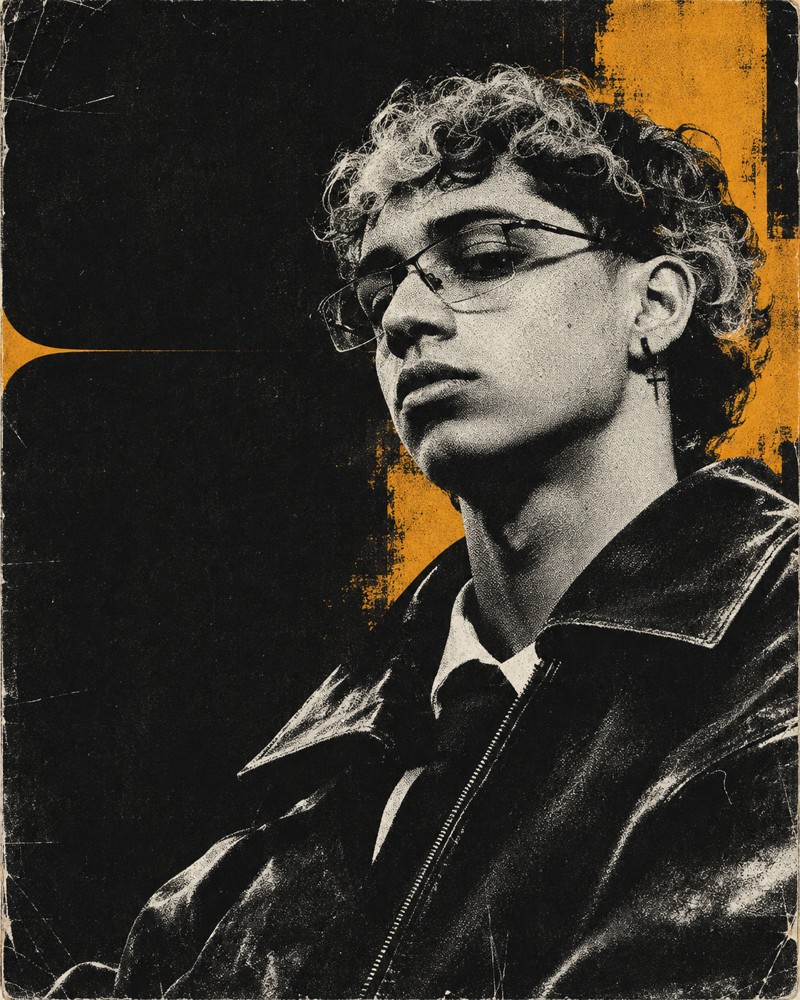

WEB APP · 0101
ENTRECAPAS / ROPERO DIGITAL
Tu ropa.
Otra perspectiva.
Guarda prendas, arma conjuntos y juega con un probador 2D. El ropero se conserva localmente en el dispositivo.
ReactTypeScriptIndexedDB

ARCHIVO PERSONAL · VOL. 01
Interfaces, algoritmos y sistemas que resuelven algo concreto. Este es el archivo de lo que voy construyendo.
Ver proyectos01 / TRABAJO SELECCIONADO
Tres formas de resolver problemas: una interfaz, una búsqueda y un pipeline.
ENTRECAPAS / ROPERO DIGITAL
Guarda prendas, arma conjuntos y juega con un probador 2D. El ropero se conserva localmente en el dispositivo.
COLOR BLOCK JAM / SOLVER
Solver de consola en C++ que explora niveles configurables con A* y anima la secuencia encontrada.
IMAGEN BINARIA / HOUGH
Pipeline multiproceso en C que preprocesa imágenes binarias y detecta centros con la Transformada de Hough.
02 / MATERIALES
El stack cambia según el problema. En estos proyectos aparecen interfaces web, estructuras de búsqueda y programas de sistema.
03 / SIGUE EL RASTRO